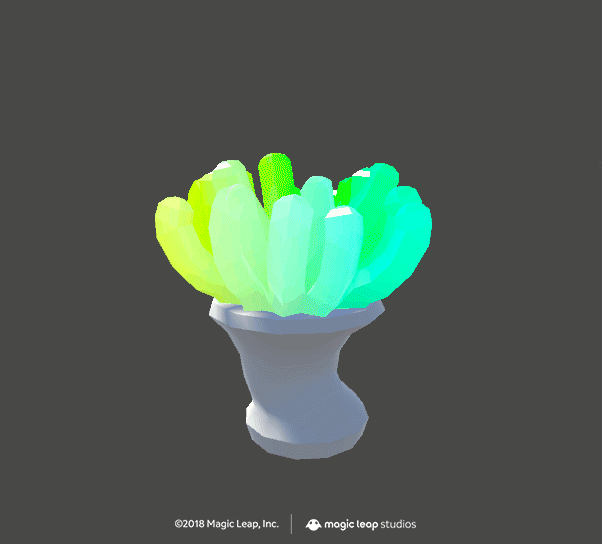
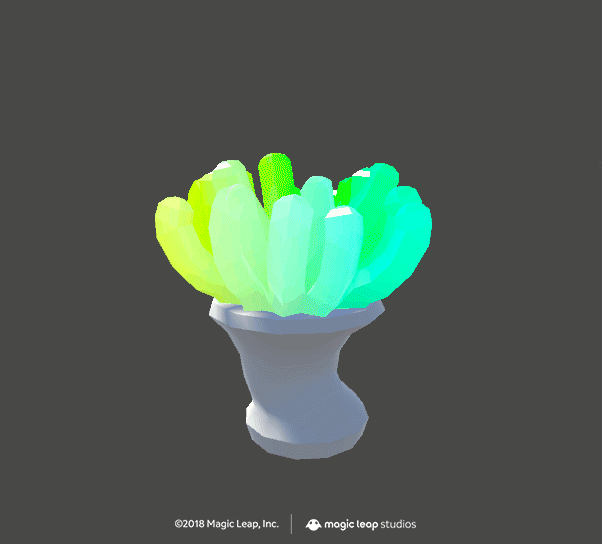
 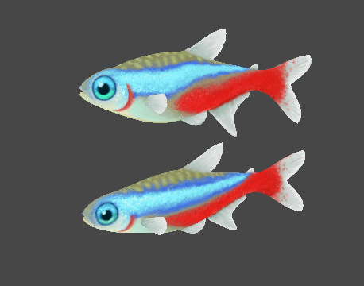
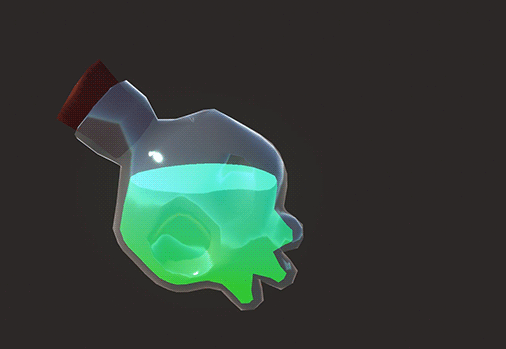
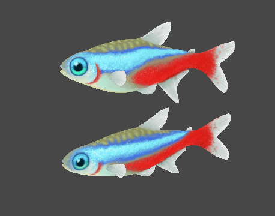
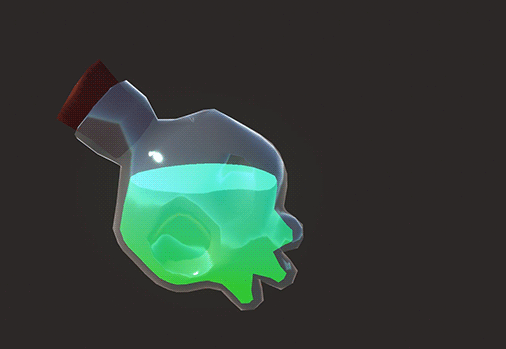
Шейдер — это набор инструкций, которые говорят видеокарте (GPU) как именно ей нужно отрисовать объект.
Выделяют два основных вида этих инструкций:
- те, которые говорят видеокарте, что сделать с вершинами объекта
- те, которые говорят видеокарте, что сделать с пикселями (также называются фрагментами) объекта
Любой отрисовываемый объект проходит сначала через вершинный, а потом через пиксельный (фрагментный) шейдер.
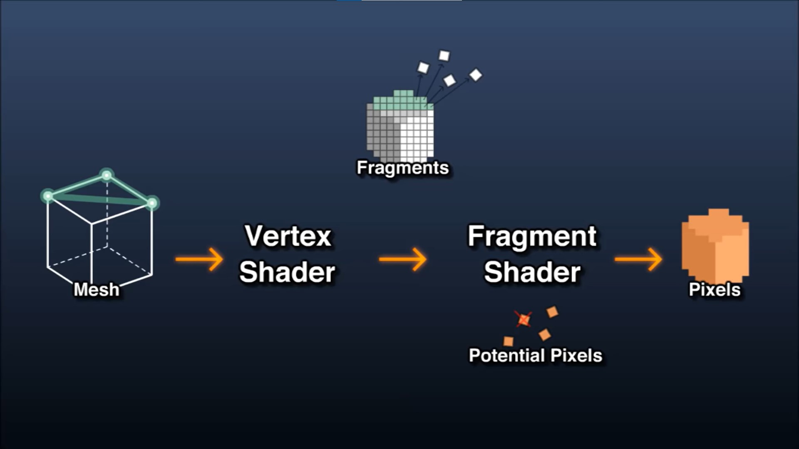Любой меш состоят из вершин. Главная задача вершинного шейдера - в том, чтобы перенести координаты каждой из этих вершин из 3D пространства сцены в 2D пространство экрана.
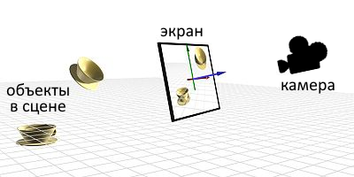Это его главная и основная задача и любой вершинный шейдер выполняет как минимум ее. Однако перед тем, как передать управление пиксельному шейдеру, он может дополнительно что-нибудь сделать с этими вершинами. Он может "надуть" или "ужать" меш вдоль нормалей, добавить эффект колыхания на ветру или под водой и еще кучу всего. Всё ограничивается лишь фантазией и знанием математики или нодов шейдерграфа.
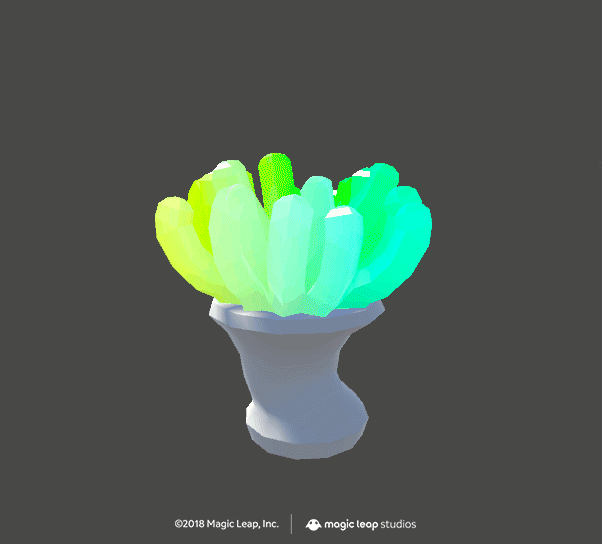
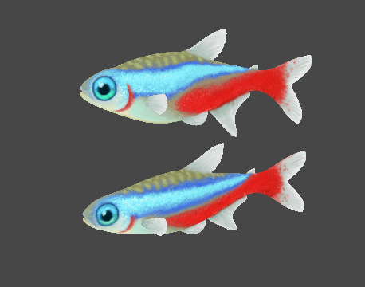
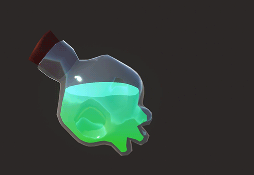
Закончив свою работу с вершинами, вершинный шейдер передает управление пиксельному. Дополнительно он может передать ему какую-то дополнительную информацию о вершинах: их нормали и uv-координаты, назначенные им вершинные цвета и тд.
Итак, вершинный шейдер перевел координаты вершин меша из 3D пространства сцены в 2D пространство экрана, но что дальше? Какие цвета использовать для отрисовки, и что с освещением? Этим и занимается пиксельный шейдер. В конечном итоге его основная задача сводится к тому, чтобы для каждого пикселя, который данный меш занимает на экране, определить его цвет.
Например, он может применить какую-то кастомную модель освещения:
 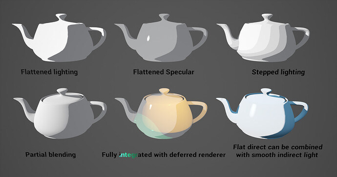
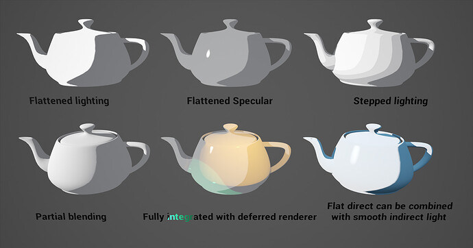
Также он же может в принципе не отрисовывать какие-то пиксели, а края образовавшихся "дыр" подчеркнуть например каким-то кастомным цветом. На этом основывается известный Dissolve shader:
Опять-таки то, какого именно цвета будет каждый из пикселей, сколько и каких текстур использовать и как их смешать - ограничивается только фантазией.
Пример совместной работы обоих шейдеров: вершинный шейдер делает волну, которая выдвигает ячейки, пиксельный шейдер определяет цвета.